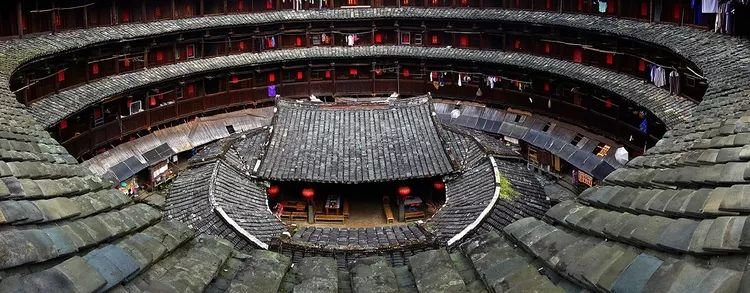
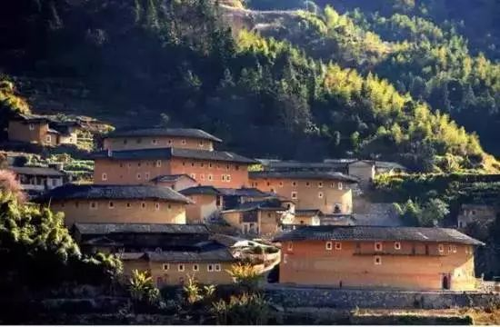
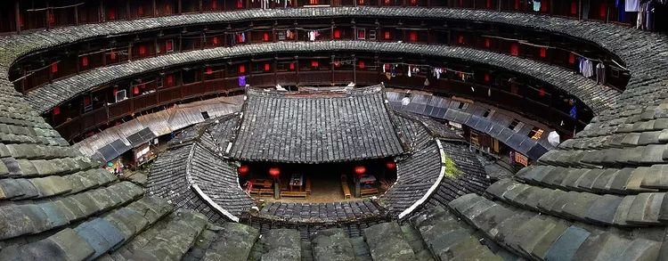
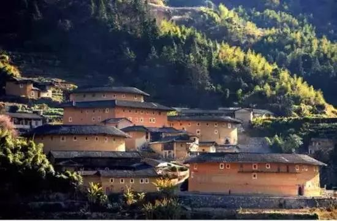

闽派土楼
福建土楼
“土楼”是闽派建筑最为鲜明的代表，在当时外有倭寇入侵，内有年年内战的情势之下，举族迁移的客家人不远千里来到他乡，选择了这种既有利于家族团聚，又能防御战争的建筑方式。同一个祖先的子孙们在一幢土楼里形成一个独立的社会，共存共荣，共亡共辱。
产生背景
福建区源于古代中原生土版筑建筑工艺技术，宋元时期即已出现，明清时期趋于鼎盛，清代土楼的建造工艺达到炉火纯青，造型多姿多彩，形成了方楼、五凤楼、圆楼等类型系列，不同类型的土楼都出现了如今扬名世界的杰出代表作。
艺术特色
 



福建土楼依山就势，布局合理，吸收了中国传统建筑规划的“风水”理念，巧妙地利用了山间狭小的平地和当地的生土、木材、鹅卵石等建筑材料，是一种自成体系，具有节约、坚固、防御性强特点，又极富美感的生土高层建筑类型。
对外的防卫性闽派建筑中的土楼的外墙厚实,墙脚用大卵石或花岗岩条石垒砌,石缝间用三合土粘合,1、2层不开窗,3层以上只开小窗洞,在冷兵器时代具有很强的对外防御性。土楼不仅以高大厚实的土墙作消极防卫,土墙上还广设枪眼以积极抗御
圆楼为圆形的土楼，又名圆寨土楼、福建圆楼或客家围屋。其用途重于防卫，因此该名称嵌“寨”之名。通常圆楼的底层为餐室、厨房，第二层为仓库，三层楼以上的所在才为住家卧房。每一个小家庭或个人的房间都是独立的，而以一圈圈的公用走廊连系各个房间。这些设计，通常也是着重防御功能。
方楼是土楼中最为普及的建筑形态。该建物类型的特征，是先夯筑一正方形或接近正方形的高大围墙，再沿此墙扩展该楼其他建物。而扩建的制式规格通常是敞开的天井与天井周围的回廊。这些相同建造样式的楼层堆积起来，最高甚至可达六层楼。最后使用木制地板与木造栋梁，加上瓦片屋顶，即成为土楼中最普遍的方楼。
福建土楼属于集体性建筑，其最大的特点在于其造型大，无论从远处还是走到跟前，土楼都以其庞大的单体式建筑令人震惊，堪称民居之最。